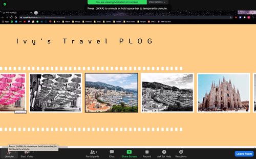

Observation 1
A significant observation that emerged through today’s user testing session is the importance of adding visual cues onto the website. Visual cues help guide and navigate users through the interface, decreasing the chance of confusions from occurring. For my website, I noticed that a few of the testers showed signs of confusion on whether to scroll up/down or left/right. The common scroll method is up and down so many of them tried scrolling up and down first. After realizing nothing is happening from scrolling up and down, they then tried scrolling left to right. To solve this issue, I will be adding a visual cue like arrows or short instructions to the page. A tester suggested that I change the orientation of the scroll wheel to only scroll horizontally. I will have to look up on how to implement change to the scroll wheel.
need to add visual cue to scroll left/right
Observation 2
Another observation that emerged from today’s testing session is that different screen sizes display contents differently. Two student’s screen sizes were larger than 1366 pixels in width and caused the film strip background image to end abruptly in the middle. I will either have to edit the background image itself or set a maximum width and height for the page. The font size for the image description was suggested to be larger. Instead of placing the footer as a content, it can be in a fixed position at the bottom of the page. I was told that my color palette works well and the film strip on the home page is a nice visual touch.

film strip background image is cut short
Observation 3
The last observation that stood out to me is that I need to include a button to return to the homepage because I have a subpage for each individual location. I did include a section at the end of the content that informs the reader to click here to return to the homepage. One tester shared that there may be the possibility of users wanting to return to the homepage while they are in the middle section of the webpage. However, I hope that users go over the entire content and since users are able to return to the homepage with the back button that is included in internet browsers, I will keep my return to homepage button at the end of my content. I will make it visually more obvious.
return to homepage section can be better
Update Prototype Plan
Based on the feedback received from today’s class, I plan to change the sizing of my film strip background image and set a maximum size to the webpage if possible. If I am not able to set a maximum size to the webpage, I will alter the appearance of the home page. There will be visual cues added on the interface to inform users to scroll left and right instead of up and down. I will try to implement a scroll wheel function so that users can only scroll left and right. I want the name of the locations to appear when hovering over a specific image and will look into that. The points mentioned above is how I hope to update my prototype.